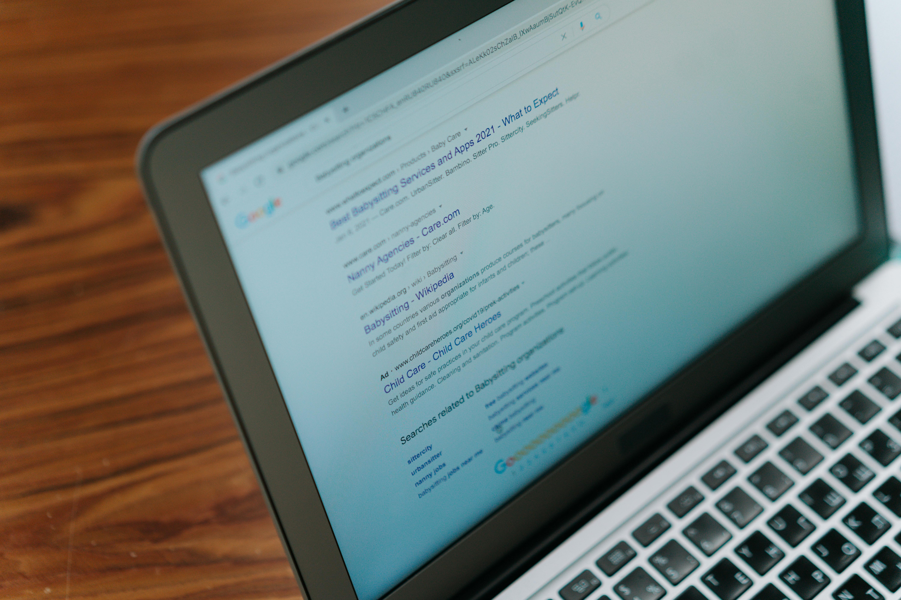

Nos Services
Un accompagnement structuré pour étudiants (Licence, Master, Doctorat) et chercheurs.
Demander un accompagnementRédaction, correction et mise en forme de documents académiques
Correction de mémoire / rapport / thèse
Révision approfondie de vos travaux académiques : correction orthographique et grammaticale, amélioration du style, cohérence argumentative, harmonisation des titres et sous-titres, vérification des citations et de la bibliographie. L’objectif est de garantir un document clair, structuré et conforme aux exigences universitaires.
Demander ce serviceAssistance à la rédaction académique
Accompagnement méthodologique et rédactionnel à toutes les étapes de votre travail : problématique, hypothèses, interprétation et discussion, plan détaillé, rédaction des chapitres, conclusion... L’assistance respecte les normes scientifiques et vise à renforcer la qualité et la rigueur de votre production.
Demander ce serviceMise en forme intégrale du document
Mise en conformité complète de votre document selon les exigences universitaires : structuration des chapitres, pagination automatique, table des matières, numérotation des figures et tableaux, harmonisation des styles, marges, interlignes et présentation générale. Le document final est prêt pour dépôt et impression.
Demander ce serviceRecherche documentaire et référencement

Recherche documentaire en ligne
Identification et sélection de sources scientifiques fiables (articles, ouvrages, rapports institutionnels) en lien avec votre thématique. Les références sont organisées de manière structurée afin de faciliter la rédaction et l’argumentation académique.
Demander ce serviceRéférencement bibliographique (APA 7e)
Mise en conformité de vos citations et bibliographies selon les normes APA (7e édition). Vérification de la cohérence entre citations dans le texte et liste finale des références, correction des erreurs de format et uniformisation complète.
Demander ce serviceCollecte et traitement des données

Conception de fiche d’enquête (KoboToolbox / Google Forms)
Élaboration de questionnaires structurés adaptés à vos objectifs de recherche : formulation des questions, choix des variables, logique de saut, paramétrage sur KoboToolbox ou Google Forms. Les outils sont prêts à être déployés sur le terrain.
Demander ce serviceAnalyse de données et Visualisation (R / SPSS / jamovi)
Transformation de vos données brutes en résultats exploitables : nettoyage rigoureux des bases, réalisation de tests statistiques avancés (descriptifs et inférentiels) et création de graphiques de haute qualité. Vous obtenez une interprétation claire et scientifiquement solide, prête à être intégrée dans vos travaux ou rapports académiques.
Demander ce service